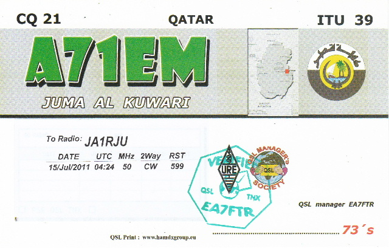

Flash ! DX

 


|
|
|
|

|
|
|
[Back Issues Jan.2015]
TIME:UTC(JST-09:00)
Report from JA1RJU(PM95sq)
31.Jan.2015(15:00b)
Report from JA1RJU(PM95sq)
30.Jan.2015(15:00f)
ZL3NW 03:23 50.110 CW CQ
ZL3NW 03:44 50.100 CW @ RST579/559
ZL2OK 03:58 50.110 SSB
ZL3NW 04:01 50.125 SSB Rod RS59
ZL2WHO 04:25 50.110 SSB Mark RS59
VK4DV 04:42 50.110/125 SSB
ZL3ADT 04:46 50.125/130 SSB
ZL2WHO 04:47 50.130 SSB ZL2WHO/b off Tody
VK4AHW 04:59 50.130/110 SSB
VK3DUT 12:24 50.110 SSB
VK4TVL/b 12:24- 50.294 CW Beacon
VK3DUT 12:27 50.103 CW
VK6RSX/b 12:30- 50.304 CW Beacon
VK8VF/b 12:30- 50.310 CW Beacon
VK3FZ 12:56 50.276 WSJT @ JT65a (-18dB/-19dB)
VK6RSX/b 13:30- 50.304 CW Beacon
VK6KXW 13:42 50.276 WSJT JT65a (-17dB)
|
◎関東地方は朝からの降雪で、東京西部では午後から更に降り続くとのことだったが、途中から"雨"に変わり大雪とは成らなかった。
昨日のVKに続き、今日は昼過ぎからZLが入感していた。 夜間に弱いVK3がオープン。WSJT(JT65a)でVK3FZ(-18dB)がクリアーにDecordされた。 |
Report from JA1RJU(PM95sq)
29.Jan.2015(15:00c)
VK4TVL/b 06:10- 50.294 CW Beacon
VK4RSC/b 06:10- 50.285 CW Beacon
VK4RGG/b 06:10- 50.057 CW Beacon
VK3BY 06:12 50.100 CW CQ
VK3XQ 06:12 50.105 CW CQ
VK4KR 06:14 50.110 SSB
VK7XX 06:16 50.130 SSB RS59
VK7RAE/b 06:19- 50.057 CW Beacon
VK3AMK 06:22 50.104 CW
VK3XQ 06:23 50.106 CW CQ CQ
VK2RHV/b 06:25- 50.288 CW Beacon
VK4AMG 06:26 50.103 CW RST599
VK3BY 06:28 50.101 CW
VK2BJ 06:31 50.105 CW @ Barry RST599
VK3XQ 06:34 50.106 CW CQ
VK4ZJB 06:38 50.110 SSB
VK3FZ 06:46 50.276 WSJT JT65a CQ
VK3MQ 06:51 50.276 WSJT JT65a
VK3FZ 07:08 50.276 WSJT @ JT65a 70W (-7dB/-13dB)
VK7XX 07:34 50.276 WSJT JT65a (-7dB)
VK4EM 07:36 50.276 WSJT JT65a (-5dB)
VK2BLS 07:43 50.276 WSJT JT65a CQ (-5dB)
VK7AC 07:58 50.110 SSB CQ
VK3FZ 08:09 50.276 WSJT JT65a CQ CQ...(-9dB)
|
◎午後から久しぶり？にオーストラリア南部のVK3/7などを中心に多数のVKが入感した。
JAとWSJTでQSOを狙っていたVK3FZも、50.276MHzアクティブにQRVしていた。 WSJTの"メイン周波数"となっている感じの50.276MHz付近では、VK2/3/4/7と広範囲にローパワーでもQSO出来た。 |
Report from JA1RJU(PM95sq) 28.Jan.2015(15:00b) Report from JA1RJU(PM95sq) 27.Jan.2015(15:00b) Report from JA1RJU(PM95sq) 26.Jan.2015(15:00b)
|
◎南半球は今が真夏。VK/ZLはEsシーズンを向かえ国内QSOで賑わっている。 反面、日中のJA方面へのTEPの伝搬は激減した。6mは春のDXシーズンまでひと休み状態。 1月5日から新たに施行されたバンドプランで、6mのデータ通信の周波数の下限周波数も50.300MHzから50.200MHzに100KHz下げられたが、 6mでのWSJT(JT65aなど)を運用するDX局(VKなど)の周波数は相変わらず"50.276MHz"がメインで使われている。 HF帯でも80m/40m帯などに、DX局とのQSO専用に設けられたWSJTのデータ通信周波数にDX局とのQSOを狙って多くJA局が出始めた。 特に40mバンドの”7.076MHz”付近の周波数は”初もの好き”の局で連日賑わっている。 EMEなどの微弱信号専用だったWSJTモードも、HF帯では30W-50W以下でヨーロッパとQSO出来るのでQRPの運用が楽しめる。 HF帯でのWSJTの運用は、近隣局への妨害(ブラックアウト)となるのでCW/SSBなどの様なQROでの運用は厳禁。 |
Report from JA1RJU(PM95sq)
25.Jan.2015(15:00b)
Report from JA1RJU(PM95sq)
24.Jan.2015(15:00b)
Report from JA1RJU(PM95sq)
23.Jan.2015(15:00b)
Report from JA1RJU(PM95sq)
22.Jan.2015(15:00c)
V73SIX/b 02:29- 50.0117 CW Beacon weak
Report from JA1RJU(PM95sq)
21.Jan.2015(15:00c)
VK4AMG 03:52 50.110 SSB CQ
VK4EM 04:18 50.110 SSB CQ
VK3AZA 04:20 50.110 SSB
VK4BLK 04:36 50.110 SSB
VK4ZJB 04:38 50.110 SSB
ZL3*** 04:43 50.110 CW CQ (JA's CQ QRM)
Report from JA1RJU(PM95sq)
20.Jan.2015(15:00b)
Report from JA1RJU(PM95sq)
19.Jan.2015(15:00b)
Report from JA1RJU(PM95sq)
18.Jan.2015(15:00c)
VK4WTN 05:34 50.110 CW CQ
VK4BLK 05:40 50.276 WSJT JT65a
VK6KXW 06:00 50.276 WSJT JT65a CQ -21dB
Report from JA1RJU(PM95sq)
17.Jan.2015(15:00b)
Report from JA1RJU(PM95sq)
16.Jan.2015(15:00b)
Report from JA1RJU(PM95sq)
15.Jan.2015(15:00b)
Report from JA1RJU(PM95sq)
14.Jan.2015(15:00b)
Report from JA1RJU(PM95sq)
13.Jan.2015(15:00b)
Report from JA1RJU(PM95sq)
12.Jan.2015(15:00d)
VK6KXW 04:55 50.106 CW RST599
VK6OX 04:56 50.1017 CW
VK6ZKO 05:00 50.110/115 SSB RS59
VK6RPH/b 05:10- 50.066 CW Beacon
VK6RBU/b 06:10- 50.3058 CW Beacon
VK6NS 06:22 50.110 SSB CQ
VK6NS 06:24 50.120 SSB @ Norm RS59 QSB
VK6RO 06:30 50.120 SSB @ Graham RS59 QSB
VK6TY 06:40 50.130 SSB @ Lee RS59 QSB
VK6OX 07:04 50.102 CW
VK6KXW 07:43 50.110 CW
Report from JA1RJU(PM95sq)
11.Jan.2015(15:00b)
Report from JA1RJU(PM95sq)
10.Jan.2015(15:00c)
VK4AGM 02:20 50.110/165 CW
VK4EM 02:23 50.110/150 SSB
VK3EY 02:24 50.140 SSB
VK2BOR 02:25 50.130 SSB
VK5BC/P 02:28 50.140/125 SSB
ZL3JT 02:30 50.103 CW
VK7CW 02:31 50.104 CW @
ZL3ADT 02:34 50.120 SSB
VK5CZ 02:37 50.096 CW @
VK3XDX/5 02:50 50.105 CW @
VK4HJ 02:55 50.100 CW
VK7XX 03:03 50.110 SSB CQ
VK2BXT 03:04 50.110/140 SSB CQ QSY
DU1EV/B 08:50- 50.008 CW Beacon RST599
DU1KA 08:53 50.110 CW CQ
BM6GJL 09:19 50.110 CW CQ
Report from JA1RJU(PM95sq)
09.Jan.2015(15:00d)
DU1EV/B 01:35- 50.008 CW Beacon RST599
V73SIX/b 01:35- 50.0117 CW Beacon weak
VK4WTN 01:48 50.110 CW CQ
VK4RGG/b 01:55- 50.057 CW Beacon
VK4MA 01:56 50.093/110 CW CQ DX
V73SIX/b 06:35- 50.0117 CW Beacon
VK2FA 06:52 50.110 SSB CQ RS59
Report from JA1RJU(PM95sq)
08.Jan.2015(15:00d)
BM6GJL 01:29 50.110 CW CQ
VK4AMG 02:03 50.110 CW CQ
VK4AMG 02:18 50.107 CW @ George RST599
VK6KXW 05:00 50.110/106 CW RST599
VK6OX 05:15 50.110 CW
VK6KXW 05:19 50.106 CW @ RST599
VK6RPH/b 05:20- 50.066 CW Beacon
Report from JA1RJU(PM95sq)
07.Jan.2015(15:00c)
ZL2WHO/B 03:39- 50.024 CW Beacon weak
ZL3RC 04:40 50.110 SSB CQ
ZL3MC 04:49 50.110 SSB
ZL3JT 05:46 50.110 CW CQ
Report from JA1RJU(PM95sq)
06.Jan.2015(15:00e)
ZL2WHO/B 06:00- 50.024 CW Beacon
VK7DX 06:19 50.110 SSB RS59
VK3HY 06:21 50.103 CW @ RST579
ZL1AKW 06:26 50.110 SSB
VK3DUT 06:27 50.110 SSB
VK3HJ 06:35 50.104 CW CQ
VK4WTN 06:40 50.105 CW CQ
ZL4AX 06:41 50.110 CW CQ
ZL4AX 06:43 50.110 CW @ RST579
ZL4AX 06:48 50.107 CW CQ CQ
VK3BY 06:57 50.110 SSB
VK3WE 07:01 50.098 CW CQ
VK3FFB 07:05 50.123 CW @ Dee RST599
Report from JA1RJU(PM95sq)
05.Jan.2015(15:00b)
ZL2WHO/B 03:40- 50.024 CW Beacon
ZL1GO 04:55 50.103 CW
|
◎平成26年12月17日付けの官報で、アマチュア業務に使用する電波の型式及び周波数の使用区別を定める告示の一部改正等が公告され、
平成27年1月5日から施行されました。 6mバンドの関連では狭帯域のデータ通信の下限周波数が50.300MHzから50.200MHzに100KHz下げられたことが主な変更部分。 従来、50.000MHzから50.300MHzの周波数帯域は、WSJTなどの占有周波数帯域3KHz以下のデータ通信が使用出来るのは、 EME（月面反射通信）などでQSOする場合に限られていましたが、今回の改正で、F2伝搬で入感する南米やオーストラリアなどの外国局とのQSOや、 国内局同士のQSOも50.200MHz以上からの運用が可能となった。 但し、50.000-50.100MHzまでの周波数帯でのRTTYなどの運用は、従来どおり外国のアマチュア局とのQSOに限られているため、JA局同士のQSOは出来ないので要注意。 |
Report from JA1RJU(PM95sq)
04.Jan.2015(15:00e)
ZL4AX 23:39 50.110 CW CQ RST569
ZL1AKW 23:42 50.110/130 SSB
ZL2WHO/B 23:45- 50.024 CW Beacon
ZL4AX 23:56 50.110 SSB
---------------------------------------------------------------
ZL2WHO/B 03:00- 50.024 CW Beacon RST599
ZL1GO 03:15 50.103 CW
VK5SFA 03:20 50.102 CW
VK5BC 03:24 50.110 SSB
VK5ZK 03:25 50.115 CW
ZL3JT 06:13 50.106 CW @ Dancan RST599
ZL3ADT 06:15 50.110 SSB RS59
VK4OH 06:21 50.120 SSB
VK4TJ 06:22 50.110 SSB CQ
VK4EM 06:25 50.120 SSB
VK4WTN 06:26 50.104 CW CQ
VK4EK 06:29 50.120 SSB
VK4TP 06:31 50.130 SSB
VK4OH 06:35 50.130 SSB
Report from JA1RJU(PM95sq)
03.Jan.2015(00:00a)
NEW YEAR PARTY 2015
Report from JA1RJU(PM95sq)
02.Jan.2015(15:00b)
NEW YEAR PARTY 2015
Report from JA1RJU(PM95sq)
01.Jan.2015(15:00c)
9W6EZ 05:25 50.110 SSB CQ
ZL2WHO/B 05:30- 50.024 CW Beacon
ZL4AX 05:34 50.110 CW QSO with HL
ZL3ADT 05:40 50.110 SSB CQ